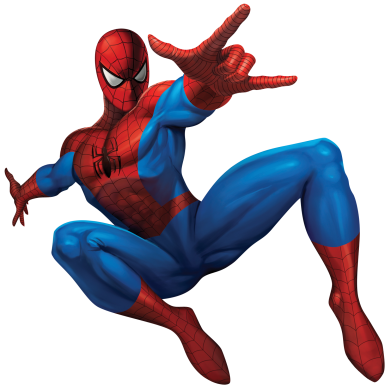
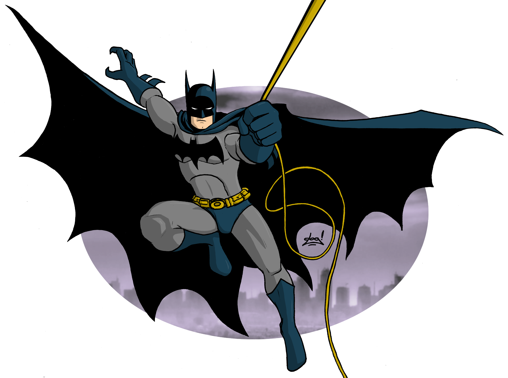
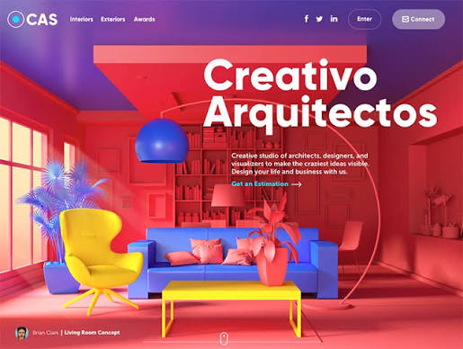
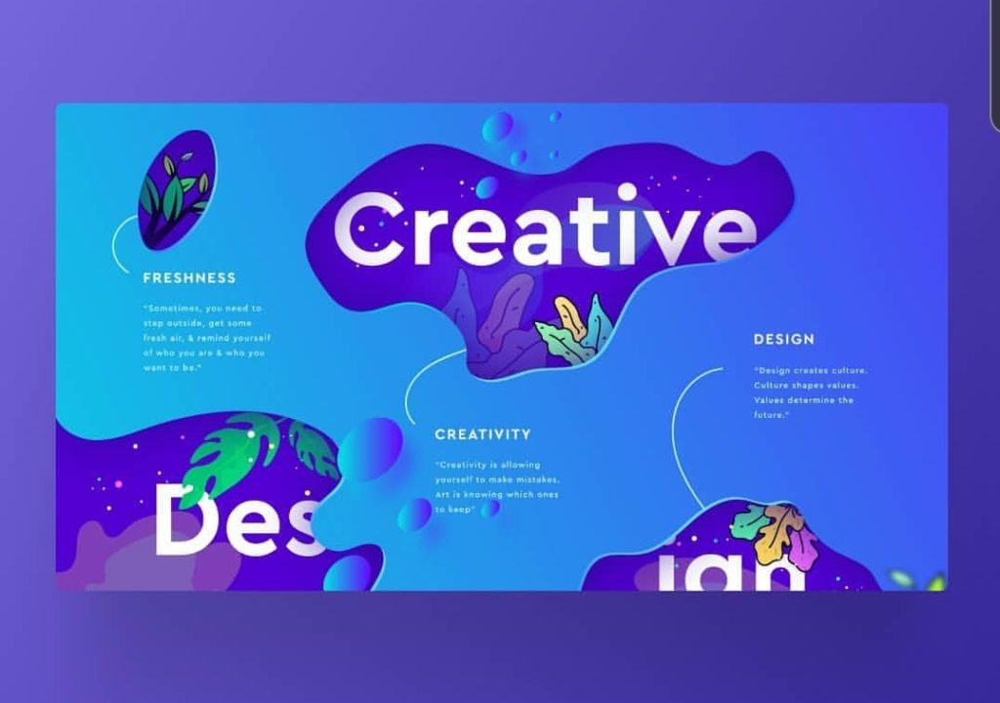
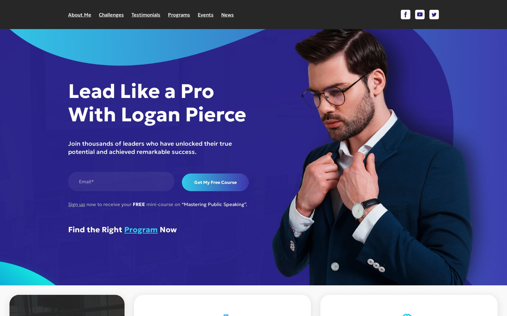

Структура вебсторінок
Логічна і доступна HTML-розмітка, зрозумілі блоки та навігація.
Привіт! Я Аліна,
Створюю зрозумілі інтерфейси та втілюю ідеї у вебсторінки.


01 / Про мене
Мені подобається перетворювати складні ідеї на прості та красиві рішення.
Цей навчальний сайт - приклад адаптивної верстки портфоліо за готовим макетом. Тут поєднано типографіку, зображення, сітку та яскраві акценти.
Для реалізації використано HTML5 і CSS3 без зовнішніх бібліотек та JavaScript.
Переглянути навички02 / MY EXPERTISE
У навчальних проєктах поєдную розмітку, стилі та принципи зручної взаємодії.
WHAT I DO
Усе починається з ідеї та перетворюється на працюючий інтерфейс.
Логічна і доступна HTML-розмітка, зрозумілі блоки та навігація.
Типографіка, композиція, колірні акценти та сітки на CSS.
Інтерфейси для ноутбуків, планшетів і мобільних пристроїв.
03 / EXPERIENCE
Приклади напрямів, які опрацьовуються в межах навчання.
Побудова сторінки за візуальним зразком із використанням HTML5 і CSS3.
Правила @media для різних екранів.
Знайомство з компонентами, повторним використанням елементів і структурою застосунків.
Перевірка відображення сторінки в браузері, навігації та доступності.
DESIGN PHILOSOPHY
Кожна деталь важлива.
Дивитися проєкти04 / EDUCATION
Вебтехнології постійно розвиваються, тому практика й опанування нових інструментів є частиною процесу.
Семантична розмітка, стилі, Flexbox, Grid, адаптивність та відтворення макетів.
Базова інтерактивність, компоненти, передавання даних і робота зі станом.
Редактори коду, браузерні DevTools, Git, GitHub і публікація сайтів.
05 / SELECTED WORK
Ілюстративна галерея концепцій для навчального портфоліо: різні типи цифрових інтерфейсів.



06 / CONTACT
Це демонстраційний сайт для лабораторної роботи №8.
Написати листа